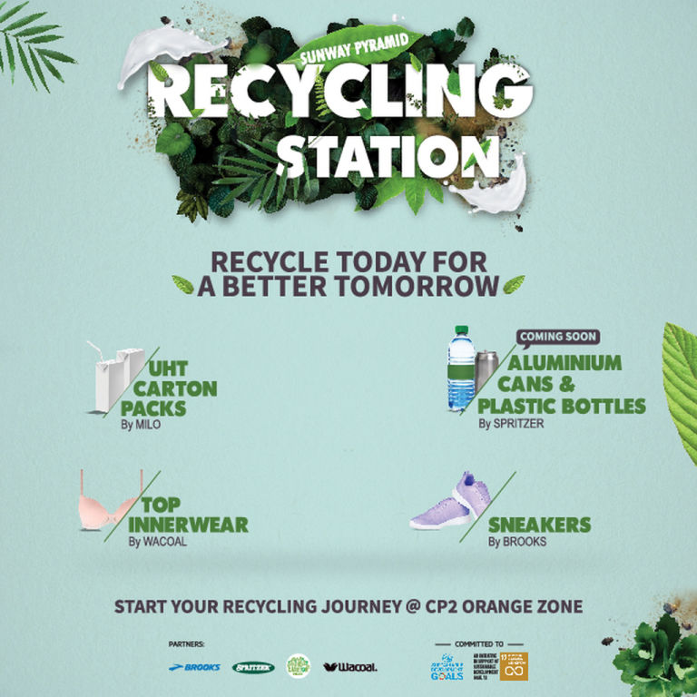
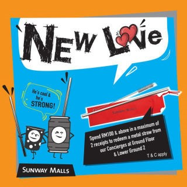
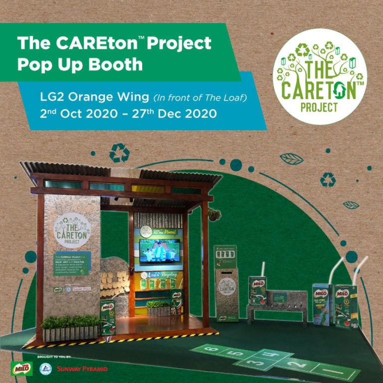

Sunway Group's four pillars of sustainability are outlined based on the 17 goals under the
United Nations Sustainable Development Goals (UN-SDG).
This SDG focuses on developing
and expanding renewable energy resources such as sun, wind, hydropower, liquid and solid
biofuels, biogas and geothermal.
Being one of the most popular and largest shopping malls at Malaysia, Sunway Pyramid on
high gear achieving the sustainable development goal.
Some of their initiatives
CPR - Compost. Plant. Reduce
Did you know? Research shows that Malaysians contribute to more than 16,000 tonnes of food waste daily,
enough to feed 12 million hungry mouths three meals a day. The shocking figure continues to worsen during
the festive seasons by 15 to 20 %.
In an initiative to manage food waste effectively,
Sunway Pyramid has invested in a food composting machine to convert food waste from tenants into compost.
Recycling Our Way to Cleaner Spaces!

We are mindful of our waste. Setting up a recycling station and our campaign at Sunway Pyramid
is one of many avenues we develop for stakeholders to take part in the circular economy
-- a cycle in which waste is recovered, recycled or restored to create new products or energy.
Run-happy With Brooks:BROOKS
Regardless of whether you enjoy running as a past-time, or as a form of achieving that ideal body,
as a competitive sport, you’ll need a pair of running shoes that’ll help you to go the distance,
and that’s just what you’ll find here at Brooks in Sunway Pyramid!
Founded in 1914,
the American brand now focuses its energy on producing top-quality shoes for running,
and concentrates on bringing the best performance technology to both men and women
that’ll enable you to step up your game in the world of running.
Metal Straw campaign

In line with the United Nations’ Sustainable Development Goals and the government’s
decision to ban plastic straws in the Federal Territories in Malaysia earlier this year,
Sunway Malls introduced metal straws which can be redeemed from participating malls.
Saving the Earth, One Pack at A Time with Milo:

MILO® UHT THE CARETONTM PROJECT POP UP BOOTH @ LG2 Orange Wing
The CAREtonTM Project is a Used Beverage Cartons recycling campaign by MILO® UHT and
Tetra Pak that transforms drink packs into ‘green’ roofing tiles and panel boards for those in need.